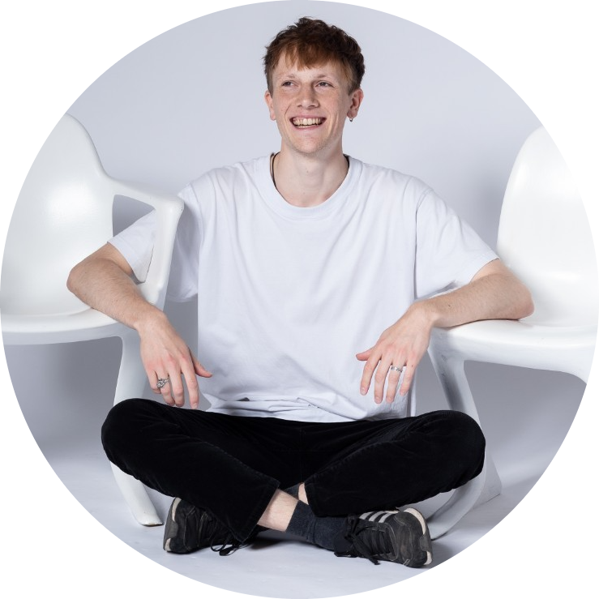

(This page is under construction as part of a learning project)
|  | Leon D. Buiter ☕IT-Recruiter at neusta consulting I'm a Junior IT Recruiter since July 2022, holding a master's degree in organizational psychology. I love singing and drinking coffee. |
2021 - 2022: University of Groningen (the Netherlands)
MsC.: Work- Organizational and Personnel Psychology
Thesis: Lonely when working from home: Risks and opportunities of task interdependence
2016 - 2019: University of Twente (the Netherlands)
BsC.: Psychology
Thesis: Eliciting Crime-Relevant Information from Suspects:
Exploring Approaches of Strategic Evidence Disclosure when Interviewing Guilty Suspects
2007 - 2015: Friedrich v. Bodelschwingh Gymnasium
High School: computer science, English, math, social sciences
| Date | Work | Place | 01.07.2022 - now | IT Recruiter | at neusta consulting GmbH | 01.09.2021 - 01.07.2022 | Bartender | at Kafe Lagerhaus | 17.02.2020 - 16.05.2020 | Intern Candidate Manager | at Campusjaeger GmbH | 01.08.2015 - 31.07.2016 | Voluntary Social Year | at Friedrich v. Bodelschwinghsche Stiftungen |
|---|
| Recruiting | ⭐⭐⭐ |
| Organizational Psychology | ⭐⭐⭐⭐ |
| Active Sourcing | ⭐⭐⭐ |
| HTML | ⭐⭐ |
| My Hobbies | Contact me |